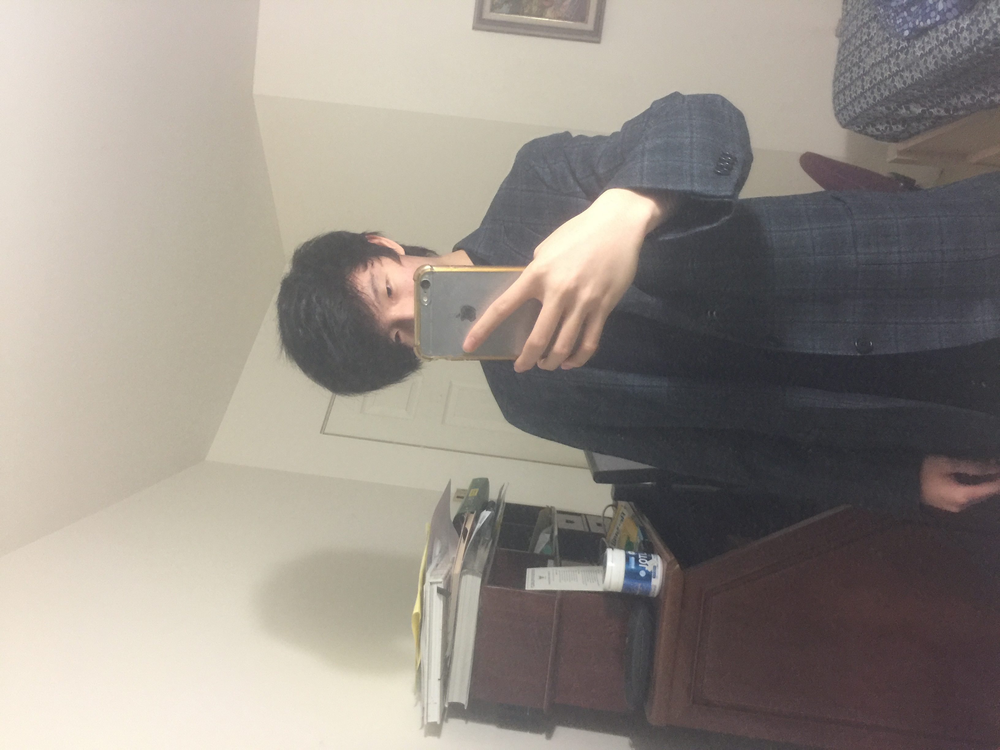

My name is Wallace, I'm 14 years old and I go to Kitsilano Secondary School. One of my electives for this year is Computer Studies. I will elaborate later on what I learn in that class. I was born in Taipei and lived there until two years ago. (2018) My hobbies are mostly playing video games and watching youtube. As soon as I get home from school, I play video games (mostly Overwatch) I somehow manage to do most of my schoolwork, despite the fact that as soon as I get home I play around 6 hours of video games every school day and I'm probably the laziest person you'll ever meet. I like reading stories on reddit too, but I normally only do that at school during lunch time. I learned Taekwondo for around 6 years, but then I quit a year before moving to Canada. The website I go to the most is Youtube. I am on youtube for about 10 hours every day.
I take Computer Studies 10 at school as a grade 9 student. For the first unit on Computer Studies, we learned how to use the program Gamemaker. We used it to make some simple games, such as platformer games and classic arcade games. I've learned about most of the basics of making a game in gamemaker, such as game controls and using variables. I took Computer Studies because I was interested in computers more than any other elective that was avaliable. That's all. Also, here's a picture of me...
